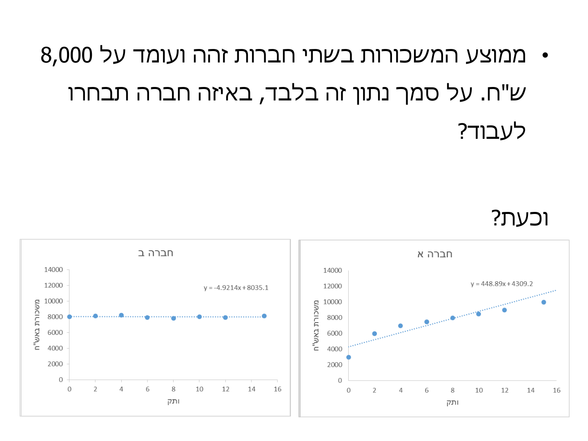
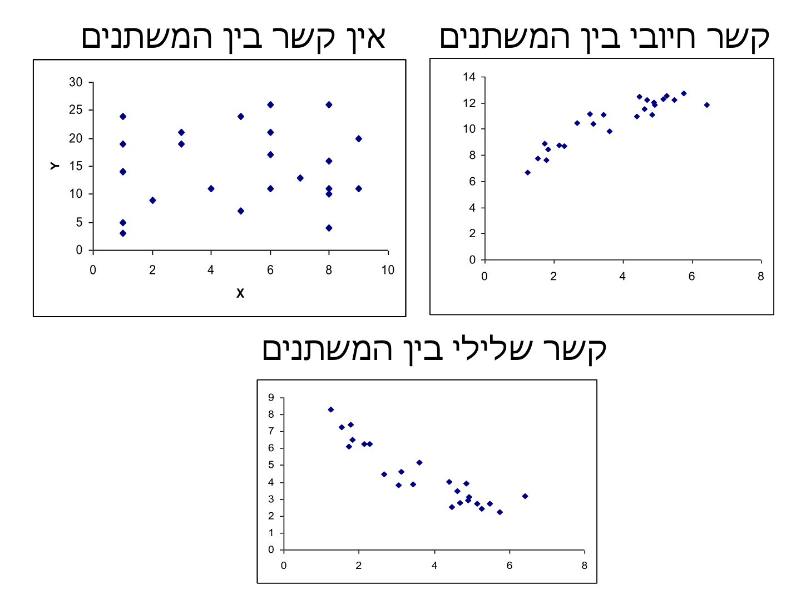
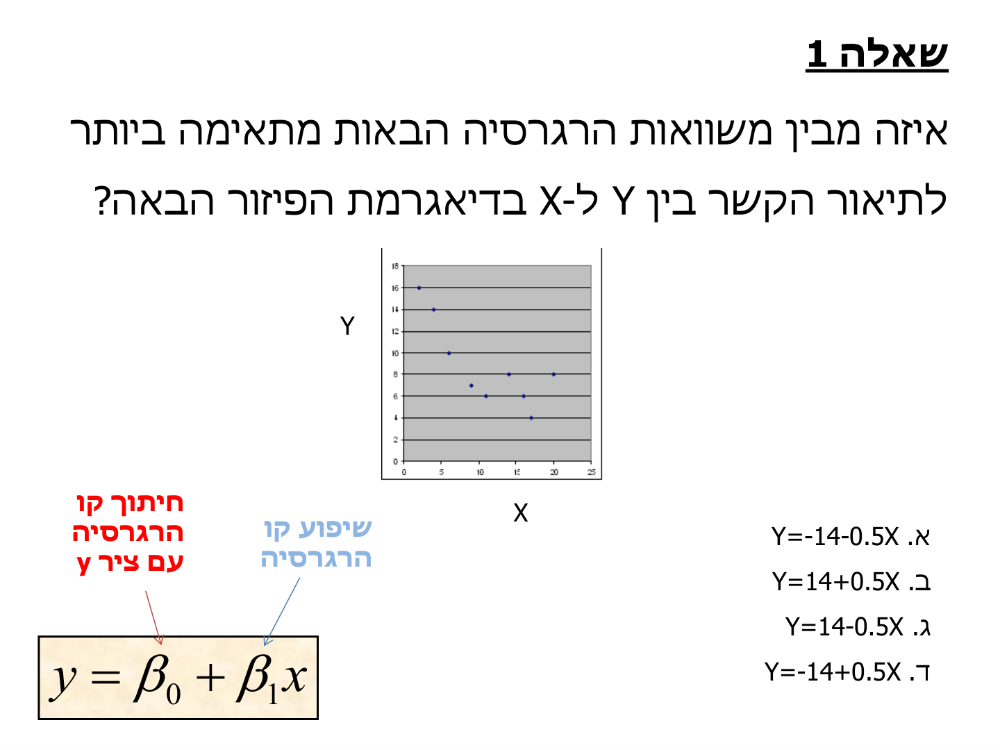
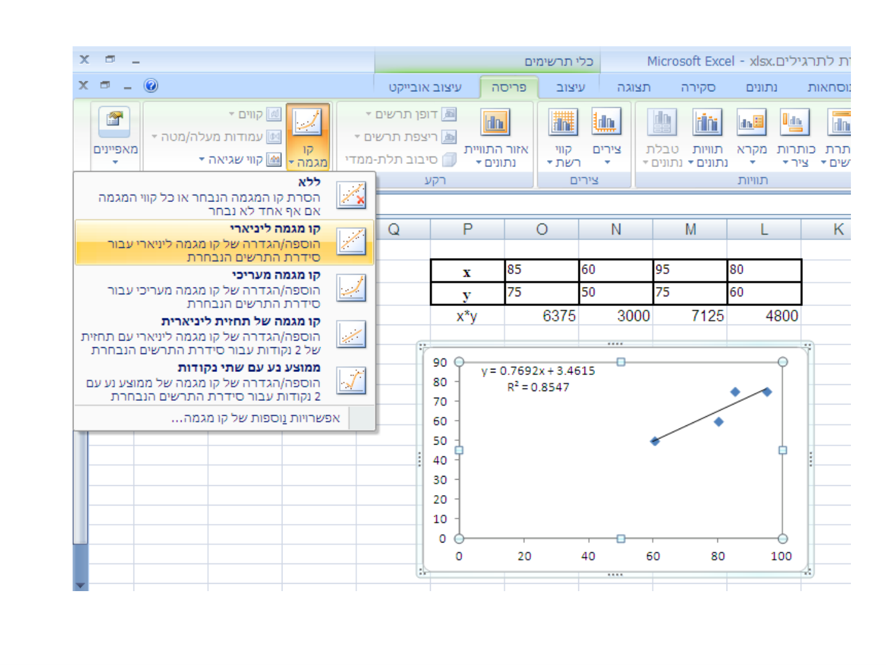
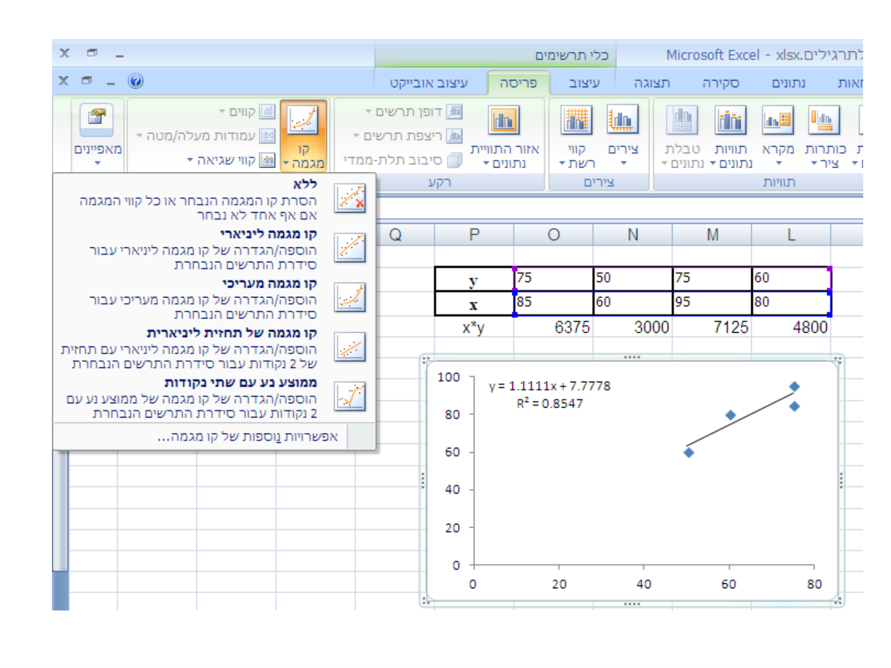
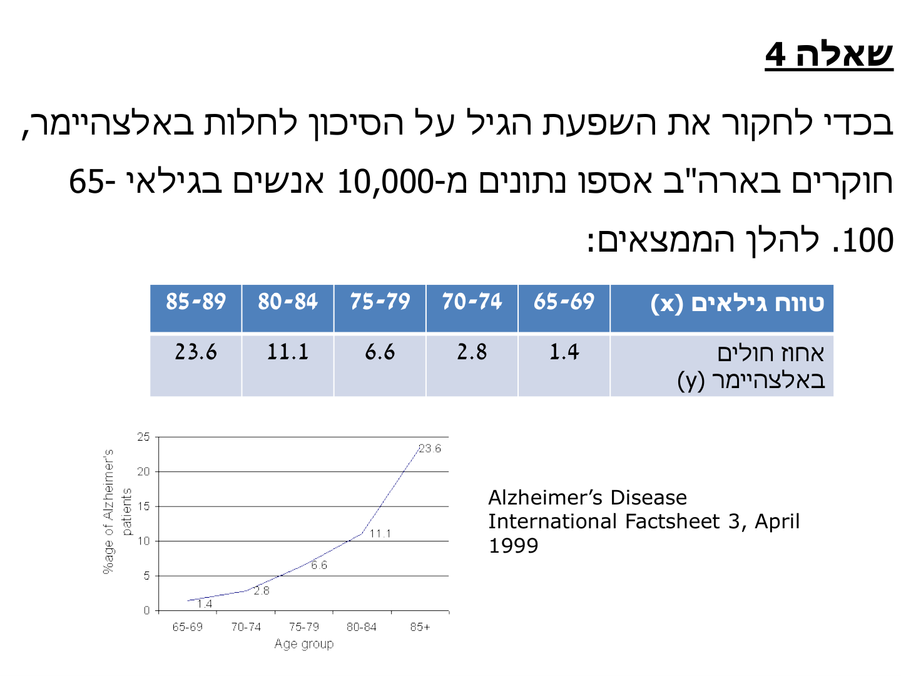

רגרסיה ליניארית ומקדם המיתאם
⏱ זמן משוער: 55 דק'
0. האינטואיציה — מה עושים כשיש שני משתנים?
עד עכשיו תיארנו משתנה אחד: ממוצע, חציון, פיזור. אבל בעולם האמיתי כמעט תמיד מעניין אותנו הקשר בין משתנים — איך המשקל תלוי בגיל, איך הזרם תלוי במתח, איך השכר תלוי בוותק. כשיש מערכת של לפחות שני משתנים, המשתנה התלוי (הסביל) מושפע או מוסבר על ידי הבלתי תלויים. הפעולה שמוצאת קשר מתמטי ביניהם נקראת רגרסיה (Regression), ואם ההתאמה היא לקו ישר — הרגרסיה היא ליניארית.
תרגול 02 מגדיר את זה כך: רגרסיה היא שיטה לניתוח הקשר (עוצמה וכיוון) בין משתנים, המאפשרת ניבוי של משתנה אחד על סמך משתנה אחר. אם יש קשר קווי בין x ל-y, נוסחת הרגרסיה היא:
y = β₀ + β₁x
כאשר β₀ = חיתוך קו הרגרסיה עם ציר y, ו-β₁ = שיפוע קו הרגרסיה.
למה ממוצע לבדו לא מספיק? דוגמת המוטיבציה של התרגול: ממוצע המשכורות בשתי חברות זהה ועומד על 8,000 ש"ח. על סמך נתון זה בלבד — באיזו חברה תבחרו לעבוד? ואז מוסיפים את דיאגרמות הפיזור:

המסקנה: ממוצע זהה יכול להסתיר קשר שונה לחלוטין בין המשתנים — ולכן מסתכלים על הרגרסיה, לא רק על הממוצע. שלושת סוגי הקשר האפשריים בדיאגרמת פיזור:

מקור: lec02-linear-regression.pdf (עמ' 1), class02.pptx (עמ' 2-5)
1. שיטת הריבועים הפחותים (LSQ) וקו דרך הראשית
איך בוחרים את "הקו הטוב ביותר" מבין אינסוף קווים אפשריים? הרגרסיה המקובלת נעשית בשיטת הריבועים הפחותים — LSQ (Least Squares): מחפשים את מקדמי הקו שעבורם ריבועי הסטיות ממנו קטנים ביותר.
1.1 קו העובר דרך הראשית: y = β₁x
נתחיל מהמקרה הפשוט. מחפשים ערך מינימלי לריבועי הסטיות של הנקודות yᵢ מן הקו:
min Σ(β₁xᵢ − yᵢ)²
כדי למצוא את המקדם β₁ הטוב ביותר גוזרים את הביטוי לפי β₁ ומשווים לאפס. שימו לב: xᵢ, yᵢ הם ערכים נתונים ולא משתנים — המשתנה היחיד בגזירה הוא β₁:
2Σ(β₁xᵢ − yᵢ)·xᵢ = 0
β₁Σxᵢ² = Σxᵢyᵢ
β₁ = Σxᵢyᵢ / Σxᵢ²
1.2 תרגיל מס' 1 מההרצאה (פתור במלואו)
שאלה: נתונות הנקודות:
| x | 1 | 2 | 3 | 4 |
|---|---|---|---|---|
| y | 3 | 5 | 6 | 8 |
למצוא את משוואת הקו העובר דרך הראשית.
פתרון (מההרצאה):
β₁ = (1·3 + 2·5 + 3·6 + 4·8) / (1² + 2² + 3² + 4²) = 63 / 30 = 2.1
לפיכך משוואת הקו תהיה y = 2.1x.
מקור: lec02-linear-regression.pdf (עמ' 1-2)
2. הקו הכללי — המשוואות הקנוניות והסטטיסטיות
בדרך כלל אין יודעים אם הקו חייב לעבור דרך הראשית, ולכן לוקחים קו כללי y = β₀ + β₁x. מחפשים β₀, β₁ שעבורם ריבועי הסטיות מן הקו מינימליים:
min Σ(β₀ + β₁xᵢ − yᵢ)²
גוזרים לפי המשתנים β₀ ו-β₁ ומקבלים 2 משוואות ב-2 נעלמים. תוצאות הגזירה הן המשוואות הקנוניות של הרגרסיה:
I. nβ₀ + β₁Σxᵢ = Σyᵢ
II. β₀Σxᵢ + β₁Σxᵢ² = Σxᵢyᵢ
(בתרגול 02 אותה מערכת מופיעה בשם "המשוואות הנורמליות" — Σyᵢ = β₀N + β₁Σxᵢ ; Σxᵢyᵢ = β₀Σxᵢ + β₁Σxᵢ² — אלה בדיוק אותן משוואות.)
2.1 Covariance — השונות המשותפת
המשוואות הקנוניות מספיקות למציאת המקדמים, אבל מצריכות ידיעה של כל הנקודות הנסיוניות. ניתן להפוך אותן למשוואות סטטיסטיות באמצעות ממוצעים ושונויות. לשם כך מגדירים ערך של שונות משותפת של המשתנים, הנקראת covariance:
Cov(x,y) = Σxᵢyᵢ/n − x̄ȳ = Σ(xᵢ−x̄)(yᵢ−ȳ)/n
הביטוי הימני (המכפלות של הסטיות מהממוצעים) הוא הגדרת השונות המשותפת; הביטוי השמאלי הוא טרנספורמציה שלו על ידי טיפול אלגברי — נוח בהרבה לחישוב. זה מקביל בדיוק לנוסחה המקוצרת של השונות:
VAR(x) = Σ(xᵢ−x̄)²/n = Σxᵢ²/n − x̄²
השאלה (מההרצאה): הוכח את הטרנספורמציה בדומה לדרך בה ראינו כי VAR(x) = Σ(xᵢ−x̄)²/n = Σxᵢ²/n − x̄². (בהרצאה הושאר כתרגיל ללא פתרון.)
פותחים את המכפלה שבהגדרה:
Σ(xᵢ−x̄)(yᵢ−ȳ)/n = Σ(xᵢyᵢ − xᵢȳ − x̄yᵢ + x̄ȳ)/n
מפצלים לסכומים ומוציאים קבועים (x̄, ȳ קבועים ביחס לסכימה):
= Σxᵢyᵢ/n − ȳ·(Σxᵢ/n) − x̄·(Σyᵢ/n) + n·x̄ȳ/n
אבל Σxᵢ/n = x̄ ו-Σyᵢ/n = ȳ, ולכן:
= Σxᵢyᵢ/n − x̄ȳ − x̄ȳ + x̄ȳ = Σxᵢyᵢ/n − x̄ȳ ∎
פתרון שנכתב לאתר; במקור אין פתרון (הוכחה מקבילה לזהות של VAR מופיעה רשמית בפתרון תרגיל 2 שאלה 2 בחוברת).
2.2 המשוואות הסטטיסטיות
טיפול אלגברי במשוואות הקנוניות, תוך שימוש ב-VAR(x), Cov(x,y) והממוצעים, מניב 2 משוואות סטטיסטיות מקבילות:
I. ȳ = β₀ + β₁x̄
II. β₁ = Cov(x,y) / VAR(x)
מקור: lec02-linear-regression.pdf (עמ' 2-3), class02.pptx (עמ' 8)
3. תרגיל מס' 2 מההרצאה ומקדם המיתאם R
3.1 תרגיל מס' 2 (פתור במלואו)
שאלה: נתונה טבלת הנתונים (אותה טבלה מתרגיל מס' 1):
| x | 1 | 2 | 3 | 4 |
|---|---|---|---|---|
| y | 3 | 5 | 6 | 8 |
למצוא את משוואת הקו y = β₀ + β₁x.
פתרון (מההרצאה): נחשב x̄ = 2.5, ȳ = 5.5:
VAR(x) = Σxᵢ²/n − x̄² = 30/4 − 2.5² = 1.25
Cov(x,y) = Σxᵢyᵢ/n − x̄ȳ = 63/4 − 2.5·5.5 = 2
β₁ = Cov / VAR(x) = 2 / 1.25 = 1.6
5.5 = β₀ + 1.6·2.5 ⟹ β₀ = 1.5
ולכן משוואת הקו: y = 1.5 + 1.6x.
3.2 מקדם המיתאם R
הרגרסיה נותנת גם את מידת ההתאמה — עד כמה הנקודות מטבלת המדידה קרובות לקו. את זה מודד מקדם המיתאם R (Correlation Coefficient):
R² = Cov²(x,y) / (VAR(x)·VAR(y))
−1 ≤ R ≤ 1
במקרה שלנו, מאחר ש-VAR(y) = 134/4 − 5.5² = 3.25:
R² = 2² / (1.25·3.25) = 0.985
תכונות R (מההרצאה + תרגול 02):
- הסימן של R הוא כמו הסימן של השונות המשותפת: סימן חיובי פירושו ש-x ו-y באותה מגמה (קו עולה); סימן שלילי מעיד על קשר שלילי — שני המשתנים במגמות מנוגדות (קו יורד).
- הערך המוחלט מצביע על מידת ההתאמה של הנקודות לקו: אם R = ±1 — כל הנקודות בדיוק על הקו; ערכים מוחלטים קרובים ל-1 — קשר חזק; ערכים קרובים לאפס — חוסר קשר וערכים אקראיים.
- מתאים למשתנים כמותיים, ומודד את מידת הקשר הקווי בין המשתנים.
ההרצאה מסכמת בשלוש סקיצות פיזור: נקודות היושבות בדיוק על קו עולה — R = 1; נקודות קרובות לקו יורד — R = −0.9; נקודות מפוזרות אקראית ללא מגמה — R ≈ 0.
מקור: lec02-linear-regression.pdf (עמ' 3-4), class02.pptx (עמ' 12)
4. מעבדת רגרסיה — לשחק עם הנוסחאות
לפני שממשיכים לרגרסיה ההפוכה, כדאי להרגיש את הנוסחאות. במעבדה שלפניכם כל המספרים מחושבים חי מנוסחאות ההרצאה — β₁ = Cov/VAR(x), β₀ = ȳ − β₁x̄, R² = Cov²/(VAR(x)·VAR(y)):
5. רגרסיה הפוכה — הקו x(y) ותרגיל מס' 3
5.1 תרגיל מס' 3 מההרצאה (פתור במלואו)
שאלה: על פי נתוני תרגיל מס' 2 נתקבל הקו y = 1.5 + 1.6x. מתוך אותה טבלת נתונים מצאו את משוואת הקו x = α₀ + α₁y.
פתרון (מההרצאה): מתקיימים 2 התנאים מן הגזירה — אותן משוואות סטטיסטיות, בהחלפת התפקידים של x ו-y:
x̄ = α₀ + α₁ȳ ⟹ 2.5 = α₀ + 5.5α₁
α₁ = Cov(x,y) / VAR(y) = 2 / 3.25 = 0.615
α₀ = 2.5 − 0.615·5.5 = −0.8825
כאשר VAR(y) = Σyᵢ²/n − ȳ² = 3.25. כלומר משוואת הקו תהיה: x = −0.8825 + 0.615y.
5.2 שלושת סעיפי ההמשך — לב העניין למבחן
א. מתי ניתן לחלץ את x ממשוואת הקו y = β₀ + β₁x? רק כאשר כל הנקודות הן על הקו, כלומר R² = 1. אחרת הקו x(y) הוא קו רגרסיה שונה — כפי שראינו: היפוך אלגברי של y = 1.5 + 1.6x היה נותן x = −0.9375 + 0.625y, ולא את קו הרגרסיה האמיתי x = −0.8825 + 0.615y.
ב. כדאי לזכור: R² הוא מכפלת השיפועים של שני קווי הרגרסיה y(x) ו-x(y):
R² = Cov²/(VAR(x)·VAR(y)) = [Cov/VAR(x)]·[Cov/VAR(y)] = β₁·α₁
ובדוגמה שלנו: R² = 1.6·0.615 ≈ 0.985 — בדיוק הערך שחושב קודם מהנוסחה המלאה.
ג. למי פיזור גדול יותר — ל-x או ל-y? מתוך שני השיפועים:
1.6 = Cov(x,y)/VAR(x) , 0.615 = Cov(x,y)/VAR(y)
אותו מונה (Cov) עם תוצאה קטנה יותר פירושו מכנה גדול יותר — מכאן VAR(y) > VAR(x) (ואכן 3.25 מול 1.25), כלומר הפיזור של y גדול יותר.
5.3 מתי משתמשים במה — טבלת ההכרעה
| מה מחפשים | הנוסחה | הערה |
|---|---|---|
| שיפוע הקו y(x) — ניבוי y מתוך x | β₁ = Cov(x,y)/VAR(x) | מחלקים בשונות של המשתנה המסביר x |
| שיפוע הקו x(y) — ניבוי x מתוך y | α₁ = Cov(x,y)/VAR(y) | רגרסיה חדשה, לא היפוך אלגברי! |
| החיתוך (בשני הכיוונים) | β₀ = ȳ − β₁x̄ ; α₀ = x̄ − α₁ȳ | נקודת הממוצעים תמיד על הקו |
| עוצמת ההתאמה | R² = Cov²/(VAR(x)·VAR(y)) = β₁·α₁ | זהה בשני הכיוונים; סימן R כסימן Cov |
מקור: lec02-linear-regression.pdf (עמ' 4)
6. תרגול 02 — דיאגרמות פיזור, Excel ואקסטרפולציה
בשקפי התרגול מופיעים ניסוחי השאלות (והפתרונות נעשו בכיתה); היחידים שמודפסים הם תוצאות ה-Excel לשאלה 3. לכן לשאלות כאן מוצג פתרון מוצע שנכתב לאתר בשיטות ההרצאה, ובשאלה 3 — מאומת מול תוצאות ה-Excel שבשקפים.
6.1 שאלה 1 — לזהות משוואה מדיאגרמת פיזור
איזו מבין משוואות הרגרסיה הבאות מתאימה ביותר לתיאור הקשר בין Y ל-X בדיאגרמת הפיזור הבאה?

- א. Y = −14 − 0.5X
- ב. Y = 14 + 0.5X
- ג. Y = 14 − 0.5X
- ד. Y = −14 + 0.5X
בודקים שני דברים בלבד, לפי תיבת הנוסחה שעל השקף עצמו:
- כיוון המגמה ⟵ הנקודות יורדות ⟵ השיפוע שלילי: β₁ < 0.
- החיתוך עם ציר y ⟵ כש-X קטן הערכים סביב 14-16 ⟵ חיתוך חיובי: β₀ ≈ 14.
רק תשובה ג — Y = 14 − 0.5X — מקיימת חיתוך חיובי ושיפוע שלילי. (א: חיתוך שלילי; ב: שיפוע חיובי; ד: גם וגם.)
פתרון שנכתב לאתר; במקור אין פתרון.
6.2 שאלה 2 — גיל ומשקל
נתונה הטבלה הבאה:
| גיל (חודשים) | 5 | 8 | 10 | 12 | 14 |
|---|---|---|---|---|---|
| משקל (ק"ג) | 6 | 7 | 8 | 9 | 10 |
מצא את ישר הריבועים הפחותים לניבוי משקל (Y) עפ"י גיל (X).
מחשבים את הסכומים (n = 5):
Σxᵢ = 49 , x̄ = 9.8 ; Σyᵢ = 40 , ȳ = 8
Σxᵢ² = 25+64+100+144+196 = 529
Σxᵢyᵢ = 30+56+80+108+140 = 414
שונות ושונות משותפת:
VAR(x) = 529/5 − 9.8² = 105.8 − 96.04 = 9.76
Cov(x,y) = 414/5 − 9.8·8 = 82.8 − 78.4 = 4.4
המקדמים:
β₁ = 4.4 / 9.76 ≈ 0.451
β₀ = 8 − 0.451·9.8 ≈ 3.58
ישר הריבועים הפחותים: y ≈ 3.58 + 0.451x. בדיקת הגיון: בגיל 10 חודשים הניבוי הוא 3.58 + 4.51 ≈ 8.1 ק"ג — קרוב מאוד לתצפית (8).
פתרון שנכתב לאתר; במקור אין פתרון.
6.3 שאלה 3 — ציוני סטטיסטיקה ומתמטיקה (+ תוצאות ה-Excel)
להלן ציונים בסטטיסטיקה ובמתמטיקה עבור 4 סטודנטים:
| ציון בסטטיסטיקה (x) | 80 | 95 | 60 | 85 |
|---|---|---|---|---|
| ציון במתמטיקה (y) | 60 | 75 | 50 | 75 |
א. בנה קו רגרסיה לניבוי הציון במתמטיקה עפ"י הציון בסטטיסטיקה
ב. בנה קו רגרסיה לניבוי הציון בסטטיסטיקה עפ"י הציון במתמטיקה
ג. אמוד את הציון בסטטיסטיקה עבור תלמידים שקיבלו 70 ו-80 במתמטיקה
ד. אמוד את הציון במתמטיקה עבור תלמיד שקיבל 100 בסטטיסטיקה
ה. מהו מקדם המתאם בין הציון בסטטיסטיקה והציון במתמטיקה?
בשקפים מודפסות תוצאות שני הכיוונים מתוך Excel (כלי תרשימים ← קו מגמה ליניארי):


חישובי בסיס (n = 4):
x̄ = 320/4 = 80 ; ȳ = 260/4 = 65
Σxᵢ² = 26250 ⟹ VAR(x) = 6562.5 − 6400 = 162.5
Σyᵢ² = 17350 ⟹ VAR(y) = 4337.5 − 4225 = 112.5
Σxᵢyᵢ = 6375+3000+7125+4800 = 21300 ⟹ Cov = 5325 − 5200 = 125
(ערכי x·y — 6375, 3000, 7125, 4800 — מודפסים בגיליון שבשקף.)
א. ניבוי מתמטיקה עפ"י סטטיסטיקה:
β₁ = 125/162.5 = 0.7692 ; β₀ = 65 − 0.7692·80 = 3.4615
y = 0.7692x + 3.4615 — בדיוק כתוצאת ה-Excel שבשקף.
ב. ניבוי סטטיסטיקה עפ"י מתמטיקה (רגרסיה חדשה, מחלקים ב-VAR(y)):
α₁ = 125/112.5 = 1.1111 ; α₀ = 80 − 1.1111·65 = 7.7778
x = 1.1111y + 7.7778 — כתוצאת ה-Excel שבשקף.
ג. ציון בסטטיסטיקה לפי הקו של סעיף ב:
y = 70: x = 1.1111·70 + 7.7778 ≈ 85.6
y = 80: x = 1.1111·80 + 7.7778 ≈ 96.7
ד. ציון במתמטיקה לפי הקו של סעיף א:
x = 100: y = 0.7692·100 + 3.4615 ≈ 80.4
ה. מקדם המתאם:
R² = 125² / (162.5·112.5) = 15625/18281.25 = 0.8547
R = +√0.8547 ≈ 0.92 (חיובי, כי Cov = 125 > 0)
ואימות בדרך של ההרצאה: R² = β₁·α₁ = 0.7692·1.1111 = 0.8547 ✓
סעיפים א-ב מאושרים על ידי תוצאות ה-Excel המודפסות בשקפים; סעיפים ג-ה — פתרון שנכתב לאתר, במקור אין פתרון.
6.4 שאלה 4 — אלצהיימר ואזהרת האקסטרפולציה
בכדי לחקור את השפעת הגיל על הסיכון לחלות באלצהיימר, חוקרים בארה"ב אספו נתונים מ-10,000 אנשים בגילאי 65-100. להלן הממצאים:
| טווח גילאים (x) | 65-69 | 70-74 | 75-79 | 80-84 | 85-89 |
|---|---|---|---|---|---|
| אחוז חולים באלצהיימר (y) | 1.4 | 2.8 | 6.6 | 11.1 | 23.6 |

א. בנה קו רגרסיה המתאר את הסיכון לחלות באלצהיימר כפונקציה של גיל
ב. עפ"י הנתונים, מהו הסיכוי של אדם בגיל 120 לחלות במחלה
ג. מהו הסיכוי של אדם בן 40 לחלות במחלה?
ד. מהו המתאם בין גיל ובין הסיכון לחלות באלצהיימר?
א. מייצגים כל טווח גילאים באמצע המחלקה (כמו בטבלאות שכיחויות): 67, 72, 77, 82, 87. עם n = 5:
x̄ = 385/5 = 77 ; ȳ = 45.5/5 = 9.1
VAR(x) = 29895/5 − 77² = 5979 − 5929 = 50
Cov = 3767/5 − 77·9.1 = 753.4 − 700.7 = 52.7
β₁ = 52.7/50 = 1.054 ; β₀ = 9.1 − 1.054·77 = −72.06
קו הרגרסיה: y = −72.06 + 1.054x.
ב. גיל 120: y = −72.06 + 1.054·120 ≈ 54.4%. אבל זו אקסטרפולציה הרחק מטווח הנתונים (65-89) — והגרף עצמו מראה שהקשר מעריכי ולא ליניארי, כך שלמספר הזה אין באמת על מה להישען.
ג. גיל 40: y = −72.06 + 1.054·40 ≈ −29.9% — אחוז שלילי, תוצאה חסרת משמעות. זו ההדגמה הקלאסית לכך שקו רגרסיה תקף רק בטווח הנתונים שממנו נבנה.
ד. VAR(y) = 733.53/5 − 9.1² = 63.9:
R² = 52.7² / (50·63.9) ≈ 0.869 ⟹ R ≈ +0.93
מתאם חיובי חזק — ובכל זאת, כפי שראינו בסעיפים ב-ג, R גבוה אינו רישיון לנבא מחוץ לטווח: הצורה המעריכית של הגרף אומרת שהמודל הליניארי הוא רק קירוב מקומי.
פתרון שנכתב לאתר; במקור אין פתרון. הבחירה באמצעי המחלקות היא המוסכמה מטבלאות השכיחויות של הקורס.
מקור: class02.pptx (עמ' 6-14)
7. תרגילי הרגרסיה מהחוברת — תרגיל מס' 2, שאלות 6-10
7.1 שאלה 6 — מתח וזרם
במעבדה חשמלית בוצע נסיון למציאת קשר בין המתח המסופק לזרם ונתקבלו התוצאות הבאות:
| מתח | 110 | 120 | 150 | 180 | 220 |
|---|---|---|---|---|---|
| זרם | 2.15 | 2.45 | 3.05 | 3.55 | 4.4 |
א. שרטט את קו הרגרסיה "ידנית".
ב. מצא אותו לפי שיטת הריבועים הפחותים.
ג. קבע את מקדם המיתאם ובדוק את משמעותו.
(בפתרון הרשמי: x הוא הזרם, y הוא המתח. סעיף א — שרטוט ידני; אפשר להתאמן עליו במצב "נחשו את הקו" של מעבדת הרגרסיה למעלה.)
ב. טבלת העזר המלאה מהפתרון הרשמי (עמ' 24 בחוברת):
| xᵢ (זרם) | yᵢ (מתח) | xᵢyᵢ | xᵢ−x̄ | yᵢ−ȳ | (xᵢ−x̄)² | (yᵢ−ȳ)² | (xᵢ−x̄)(yᵢ−ȳ) |
|---|---|---|---|---|---|---|---|
| 2.15 | 110 | 236.5 | −0.97 | −46 | 0.941 | 2116 | 44.62 |
| 2.45 | 120 | 294 | −0.67 | −36 | 0.449 | 1296 | 24.12 |
| 3.05 | 150 | 525 | −0.07 | −6 | 0.005 | 36 | 0.42 |
| 3.55 | 180 | 639 | 0.43 | 24 | 0.185 | 576 | 10.32 |
| 4.4 | 220 | 968 | 1.28 | 64 | 1.638 | 4096 | 81.92 |
| Σ = 15.6 | 780 | 2595 | 3.218 | 8120 | 161.4 |
(וכן Σxᵢ² = 51.89, x̄ = 3.12, ȳ = 156.)
הפתרון הרשמי בוחר קו דרך הראשית y = ax — כי פיזיקלית V = R·I, כלומר a הוא ההתנגדות R:
a = Σxᵢyᵢ / Σxᵢ² = 2595 / 51.89 ≈ 50.0
כלומר y ≈ 50x — התנגדות של כ-50Ω, מה שמתיישב עם הנתונים (למשל 220/4.4 = 50).
בכתב היד של הפתרון הוצב בטעות Σxᵢ = 15.6 במכנה והתקבל 166.35; החישוב לפי הנוסחה שנכתבה שם, a = Σxᵢyᵢ/Σxᵢ², נותן 2595/51.89 ≈ 50.0.
ג. מקדם המיתאם (בנוסחת המכפלות מטבלת העזר):
r = Σ(xᵢ−x̄)(yᵢ−ȳ) / √(Σ(xᵢ−x̄)²·Σ(yᵢ−ȳ)²)
r = 161.4 / √(3.218·8120) = 161.4 / 161.65 = 0.998
קשר חיובי חזק (כמעט מלא) — וזה מתאים לתיאוריה (חוק אוהם).
7.2 שאלה 7 — שני קווי הרגרסיה
נתונה הטבלה הבאה:
| X | 1 | 3 | 4 | 6 | 8 | 9 | 11 | 14 |
|---|---|---|---|---|---|---|---|---|
| Y | 1 | 2 | 4 | 4 | 5 | 7 | 8 | 9 |
א. מצא את ישר הריבועים הפחותים.
ב. מצא את הישר כאשר x = f(y).
טבלת העזר מהפתרון הרשמי:
| 1 | 3 | 4 | 6 | 8 | 9 | 11 | 14 | Σ | |
|---|---|---|---|---|---|---|---|---|---|
| y | 1 | 2 | 4 | 4 | 5 | 7 | 8 | 9 | 40 (ȳ=5) |
| xᵢ² | 1 | 9 | 16 | 36 | 64 | 81 | 121 | 196 | 524 |
| yᵢ² | 1 | 4 | 16 | 16 | 25 | 49 | 64 | 81 | 256 |
| xᵢyᵢ | 1 | 6 | 16 | 24 | 40 | 63 | 88 | 126 | 364 |
(שורת ה-x: Σxᵢ = 56, x̄ = 7.)
א. מציבים במשוואות הקנוניות (בפתרון הרשמי הסימון: b = חיתוך, a = שיפוע):
40 = 8b + 56a ; 364 = 56b + 524a
⟹ a = 0.636 , b = 0.545
משוואת הקו: y = 0.545 + 0.636x.
בדף השאלות של החוברת מודפסת ליד הסעיף התשובה y = 0.333 + 0.667x; הפתרון הרשמי המלא (וחישוב β₁ = Cov/VAR(x) = 10.5/16.5) נותנים 0.636 ו-0.545.
ב. עבור x = f(y) המשוואות תהיינה:
56 = 8b + 40a ; 364 = 40b + 256a
⟹ a = 1.5 , b = −0.5
כלומר x = −0.5 + 1.5y.
ולפי הזהות מההרצאה: R² = β₁·α₁ = 0.636·1.5 ≈ 0.955 — הנקודות קרובות לקו אך לא בדיוק עליו, ולכן שני הקווים אכן שונים זה מזה.
7.3 שאלה 8 — הוכחה: הישר עובר דרך נקודת הממוצעים
הוכח כי ישר הריבועים הפחותים עובר דרך הנקודה (x̄, ȳ) תמיד.
מהמשוואה הראשונה של קו הריבועים הפחותים ניתן לקבל את הנדרש לאחר חלוקה ב-N:
Σyᵢ = bN + aΣxᵢ ⟹ Σyᵢ/N = b + a·Σxᵢ/N ⟹ ȳ = b + ax̄
כלומר שהקו עובר דרך (x̄, ȳ). ∎
7.4 שאלה 9 — לינאריזציה עם log
נתון קשר בין משתנים לפי הטבלה הבאה:
| X | 2 | 3 | 4 | 5 |
|---|---|---|---|---|
| Y | 1 | 10 | 100 | 1000 |
הקשר כמובן אינו לינארי. השתמש ב-log y על מנת לקבל קשר לינארי ומצא את קו הרגרסיה.
מגדירים משתנה חדש Y = log y:
| X | 2 | 3 | 4 | 5 | |
|---|---|---|---|---|---|
| y | 1 | 10 | 100 | 1000 | |
| Y = log y | 0 | 1 | 2 | 3 | Ȳ = 1.5 |
Σxᵢ = 14 , x̄ = 3.5 , Σxᵢ² = 54 , ΣxᵢYᵢ = 26 , ΣYᵢ = 6
מציבים במשוואות הקנוניות:
6 = 4b + 14a ; 26 = 14b + 54a ⟹ a = 1 , b = −2
כלומר log y = x − 2.
מקדם המיתאם של הקשר אחרי הלינאריזציה:
Σ(xᵢ−x̄)² = 5 ; Σ(Yᵢ−Ȳ)² = 5
Σ(xᵢ−x̄)(Yᵢ−Ȳ) = (−1.5)(−1.5) + (−0.5)(−0.5) + 0.5·0.5 + 1.5·1.5 = 5
r = 5 / √(5·5) = 1
קשר חיובי מלא — אחרי הלוגריתם כל הנקודות בדיוק על הקו.
7.5 שאלה 10 — מקדם המיתאם של תרגילים קודמים
חשב את מקדם המיתאם הלינארי בתרגילים 6 ו-9. (כך בכתב היד; ייתכן שהכוונה "6 ו-7".)
שני החישובים מופיעים בתוך הפתרונות הרשמיים של השאלות עצמן:
- שאלה 6 (מתח/זרם): r = 161.4/161.65 = 0.998 — קשר חיובי כמעט מלא, מתאים לתיאוריה.
- שאלה 9 (אחרי הלינאריזציה): r = 5/√25 = 1 — קשר חיובי מלא.
מקור: exercise-booklet-with-solutions.pdf (תרגיל מס' 2 עמ' 3; פתרונות עמ' 23-24)
8. מלכודות למבחן
9. בדיקה עצמית
בשיטת הריבועים הפחותים (LSQ) — אילו מרחקים ממזערים, ולמה דווקא אותם?
מה קובעת המשוואה הסטטיסטית הראשונה של הרגרסיה, ȳ = β₀ + β₁x̄?
בדוגמת ההרצאה חושבו Cov(x,y) = 2 ו-VAR(x) = 1.25. מהו שיפוע קו הרגרסיה β₁ של y על x?
מה ניתן לומר על מקדם מיתאם R = −0.9?
מתי מותר לחלץ את x מתוך משוואת הרגרסיה y = β₀ + β₁x (היפוך אלגברי של הקו)?
מאותה טבלת נתונים בהרצאה התקבלו y = 1.5 + 1.6x וגם x = −0.8825 + 0.615y. כיצד מוצאים מכאן את R² בלי לחשב שונויות?
בתרגול 02 שאלה 3, רגרסיה של ציון מתמטיקה על סטטיסטיקה נתנה y = 0.7692x + 3.4615, והרגרסיה בכיוון ההפוך נתנה y = 1.1111x + 7.7778. מה בכל זאת משותף לשני הכיוונים?
בשאלת האלצהיימר (תרגול 02) הנתונים נאספו בגילאי 65-89. מדוע ניבוי לפי קו הרגרסיה לגיל 40 הוא בעייתי?
סיימתם את הפרק? סמנו אותו כהושלם: